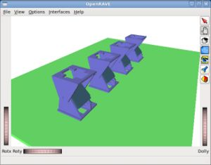
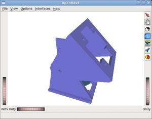

Contenido
[ocultar]Introducción
En esta página voy a ir poniendo mis avances con Jderobot 5.0, el software para robótica desarrollado en la Universidad Rey Juan Carlos.
Componentes
Servo1: Servo virtual en Openrave
- 17/Marzo/2010: Movimiento de 4 servos usando la interfaz JointsArray.
|
|
 "Array" de 4 módulos Y1 para hacer pruebas |

- 14/Marzo/2010: Primera prueba con Servo1 (blog)
|
|
 Pantallazo del componente Servo1 en acción |


Repositorio
svn co https://svn.jderobot.org/users/obijuan/postdoc/trunk/jderobot5-components/
Enlaces
Noticias
- 13/Marzo/2010: Comenzada esta página